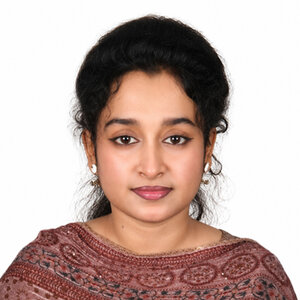

2027 EXPECTED
MASTER'S DEGREE
Master of Science in Computer Science & Engineering
Jahangirnagar University
ONGOING
OPEN TO INTERNSHIP & ENTRY-LEVEL OPPORTUNITIES
I enjoy learning how technology works, solving problems and turning ideas into practical projects. My interests include software development, web technologies and artificial intelligence.

01 / A LITTLE INTRODUCTION
I am a Computer Science and Engineering graduate from Daffodil International University, with an interest in building useful technology and continuing to grow as a developer.
My academic background has introduced me to programming, databases, web development, machine learning and natural language processing. I am interested in applying my technical knowledge, learning from real-world work and contributing to a collaborative team.
02 / ACADEMIC BACKGROUND
MASTER'S DEGREE
Jahangirnagar University
BACHELOR'S DEGREE
Daffodil International University
CGPA: 2.85 / 4.00
03 / TOOLS & TECHNOLOGIES
Technologies and subjects from my academic background and practical learning.
04 / SELECTED ACADEMIC WORK
A selection of academic projects that reflect my learning and technical interests.
Developed a 2D animation project using C Programming, OpenGL, GLUT and Math Library.
Developed an academic digital-library website using web technologies and a MySQL database.
Explored language identification using TF-IDF with Naive Bayes, LSTM-based modelling and statistical N-gram methods.
05 / FEATURED ACADEMIC WORK
Undergraduate research focused on explainable machine learning for plant disease detection.
Developed a hybrid framework combining deep feature extraction, PCA-based dimensionality reduction and machine-learning classifiers.
06 / HOW I WORK
07 / LET'S CONNECT
I am interested in CSE/IT internships and entry-level opportunities where I can learn, contribute and grow.
Send me an email ↗